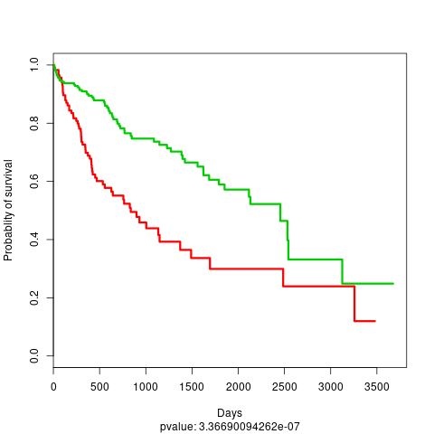

Case study: Analyzing TCGA HCC dataset¶
In this example, we will use the RNA-Seq, miRNA, and DNA Methylation datsets from the TCGA HCC cancer dataset to perform subtype detection, identify subtype specific features, and fit supervised model that we will use to project the HCC samples using only the RNA-Seq OMIC layer. This real case dataset is available directly inside the data folder from the package.
Dataset preparation¶
First, locate the data folder and the compressed matrices:
data
├── meth.tsv.gz
├── mir.tsv.gz
├── rna.tsv.gz
└── survival.tsv
go to that folder and extract these files using gzip -d *.gz. Now, we are ready to instanciate a DeepProg instance.
from simdeep.simdeep_boosting import SimDeepBoosting
from simdeep.config import PATH_THIS_FILE
from collections import OrderedDict
assert(isfile(path_data + "meth.tsv"))
assert(isfile(path_data + "rna.tsv"))
assert(isfile(path_data + "mir.tsv"))
tsv_files = OrderedDict([
('MIR', 'mir.tsv'),
('METH', 'meth.tsv'),
('RNA', 'rna.tsv'),
])
# The survival file located also in the same folder
survival_tsv = 'survival.tsv'
assert(isfile(path_data + "survival.tsv"))
# More attributes
PROJECT_NAME = 'HCC_dataset' # Name
EPOCHS = 10 # autoencoder fitting epoch
SEED = 10045 # random seed
nb_it = 10 # Number of submodels to be fitted
nb_threads = 2 # Number of python threads used to fit survival model
We need also to specify the columns to use from the survival file:
head data/survival.tsv
Samples days event
TCGA.2V.A95S.01 0 0
TCGA.2Y.A9GS.01 724 1
TCGA.2Y.A9GT.01 1624 1
TCGA.2Y.A9GU.01 1939 0
TCGA.2Y.A9GV.01 2532 1
TCGA.2Y.A9GW.01 1271 1
TCGA.2Y.A9GX.01 2442 0
TCGA.2Y.A9GY.01 757 1
TCGA.2Y.A9GZ.01 848 1
survival_flag = {
'patient_id': 'Samples',
'survival': 'days',
'event': 'event'}
Now we define a ray instance to distribute the fitting of the submodels
import ray
ray.init(num_cpus=3)
Model fitting¶
We are now ready to instanciate a DeepProg instance and to fit a model
# Instanciate a DeepProg instance
boosting = SimDeepBoosting(
nb_threads=nb_threads,
nb_it=nb_it,
split_n_fold=3,
survival_tsv=survival_tsv,
training_tsv=tsv_files,
path_data=path_data,
project_name=PROJECT_NAME,
path_results=path_data,
epochs=EPOCHS,
survival_flag=survival_flag,
distribute=True,
seed=SEED)
boosting.fit()
# predict labels of the training
boosting.predict_labels_on_full_dataset()
boosting.compute_clusters_consistency_for_full_labels()
boosting.evalutate_cluster_performance()
boosting.collect_cindex_for_test_fold()
boosting.collect_cindex_for_full_dataset()
boosting.compute_feature_scores_per_cluster()
boosting.write_feature_score_per_cluster()
Visualisation and analysis¶
We should obtain subtypes with very significant survival differences, as we can see in the results located in the results folder

Now we might want to project the training samples using only the RNA-Seq layer
boosting.load_new_test_dataset(
{'RNA': 'rna.tsv'},
survival_tsv,
'test_RNA_only',
)
boosting.predict_labels_on_test_dataset()
boosting.compute_c_indexes_for_test_dataset()
boosting.compute_clusters_consistency_for_test_labels()
We can use the visualisation functions to project our samples into a 2D space
# Experimental method to plot the test dataset amongst the class kernel densities
boosting.plot_supervised_kernel_for_test_sets()
boosting.plot_supervised_predicted_labels_for_test_sets()
Results for unsupervised projection

Results for supervised projection